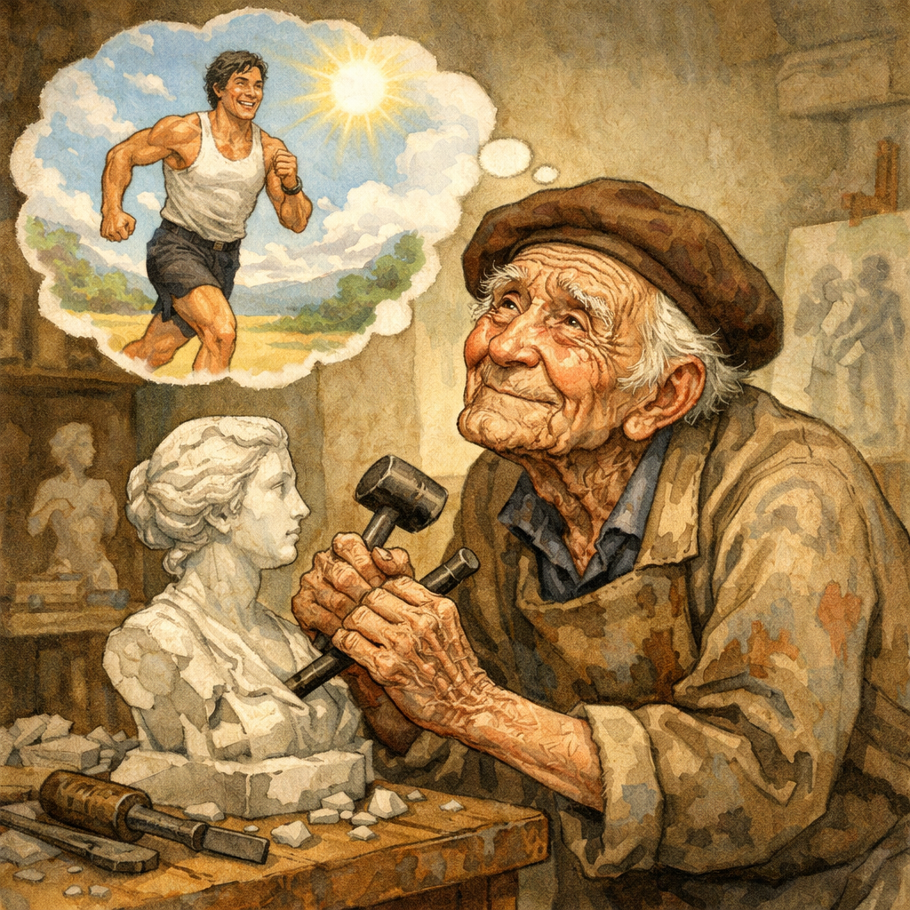

多くの人は、心のどこかで「できるならずっと生きていたい」と願っています。 それは単なる欲望ではなく、もっと深いところにある感覚です。
一方で、「人は自然の摂理として老いて死ぬものだ」と考える人もいます。 しかし、そのように考える人であっても、多くの場合「死後の命」や「何かが続くこと」をどこかで期待しています。
つまり人は、
👉 死を受け入れようとしながらも、完全には受け入れきれない存在なのです。
この「永遠を求める心」は、私たちの日常の中にはっきりと表れています。
これらはすべて、
👉 人が本質的に“終わりのないもの”を求めている証拠です。
もし人間が本当に「有限で十分な存在」であれば、ここまで強く永続性を求めることはないはずです。
この人間の不思議な性質について、聖書は次のように説明しています。
「神は人に，永遠を思う心を与えた」
― 伝道の書 3:11
この言葉は、人間の内面にある「永遠への憧れ」が偶然ではないことを示しています。
つまり、
ということです。
人間の心には、次のような特徴があります。
これは単なる感情ではなく、
👉 人間の本質そのものを示すヒントです。
そしてその答えは、
「なぜ人は永遠を求めるのか」ではなく
👉 「人は本来どのように造られたのか」
という問いに目を向けることで見えてきます。
もしよければ、この流れから
「死は本来の姿なのか？」
「永遠の命の希望とは何か？」
といったテーマにもつなげて、さらに深く考察できます。